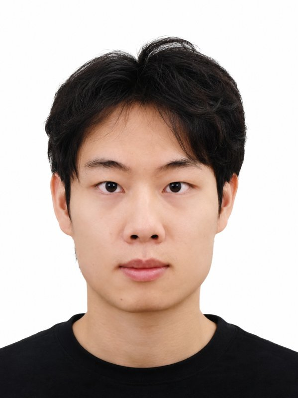
About Me
Zhizheng Liu · 刘郅政
PhD Candidate, School of Design and Arts
Beijing Institute of Technology
Letting people step inside cultural heritage.
I design interactive ways for the public to see, touch and understand cultural heritage.
My research brings together cultural heritage, human-computer interaction, digital storytelling and information visualization. I build virtual-reality serious games and gamified experiences around the architecture and colors of the Dunhuang murals, and study user-centred, inclusive design for smart homes, furniture and museums.
刘郅政，北京理工大学设计与艺术学院博士研究生，南洋理工大学计算机与数据科学学院联合培养博士生。研究方向为文化遗产、人机交互、数字叙事与信息可视化。
Newsscroll ↓
- Selected for the Young Elite Scientists Sponsorship Program (PhD Track), China Association for Science and Technology (CAST).
- Became a Recommended Individual Member of the China Industrial Design Association.
- Started as a joint PhD student at CCDS, Nanyang Technological University, Singapore.
- Exhibition 天宫灵境 · The Spiritual Realm of Heavenly Palace, a touring digital exhibition funded by the China National Arts Fund, opened.
- Awarded the State-Sponsored Graduate Study Abroad Program, China Scholarship Council.
- Received the National Scholarship for doctoral students.
- "ArchiBuilder" accepted by Frontiers of Architectural Research (CAS Q1 Top). DOI ↗
- Dunhuang colors VR game accepted by Heritage Science (CAS Q1 Top). DOI ↗
- Began the Master's–PhD program (硕博连读) at the School of Design and Arts, Beijing Institute of Technology.
- Inclusive smart-home review published as the cover article of 包装工程. DOI ↗
- Received the National Scholarship for master's students.
- Won First Prize in the national finals of the NCDA National Digital Art Design Competition.
- Admitted to Beijing Institute of Technology as a master's student, ranked 1st in the Art and Design entrance examination (initial exam score 422).
- Graduated with a BA from the School of Art, Tianjin University of Technology.
Selected Work
Selected Publications
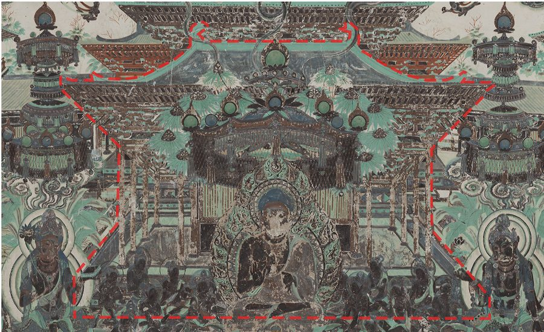
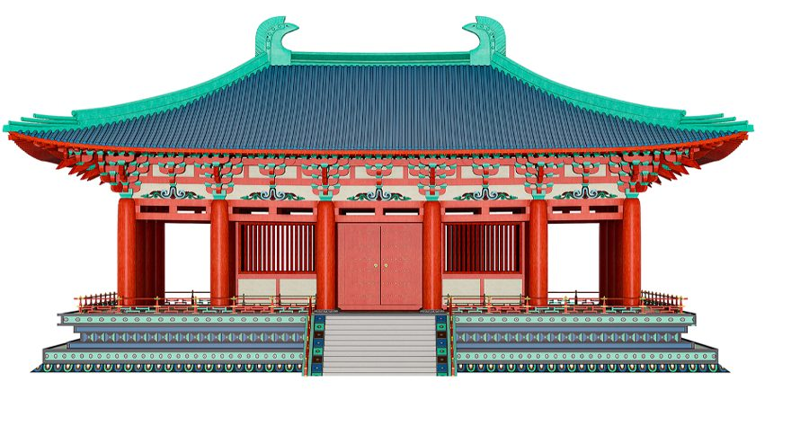
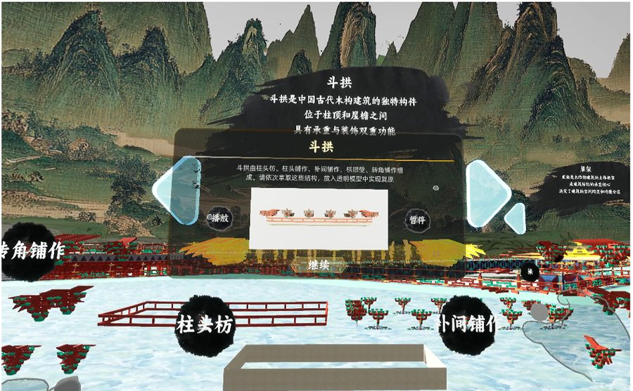
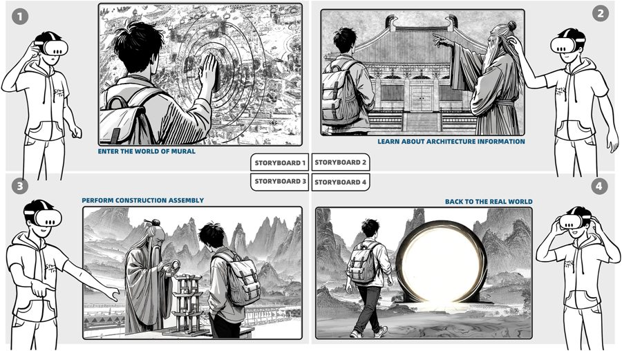
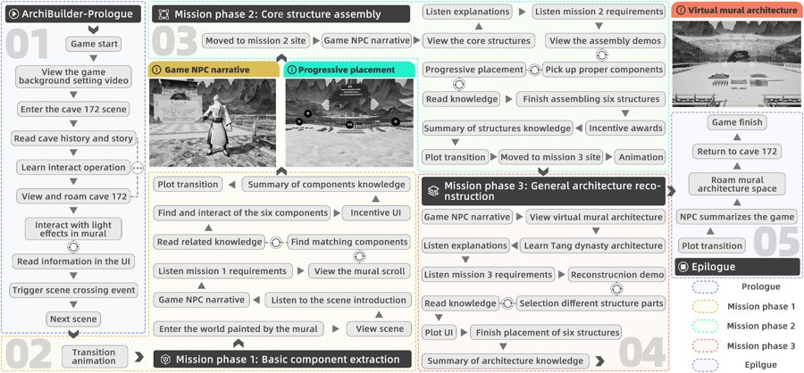
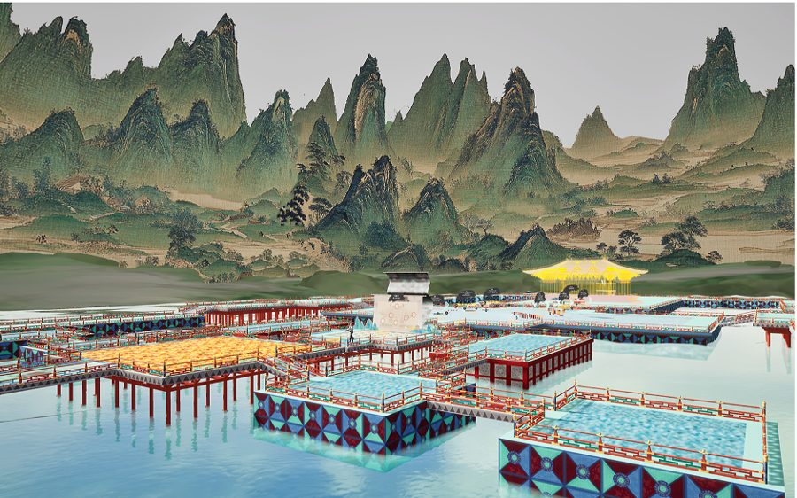
ArchiBuilder: A Virtual Reality-Based Gamified Experience Design for Architectural Images in Dunhuang Murals
Players rebuild mural architecture through narrative missions in VR. A study (N = 30) found lower cognitive load and higher immersion than a VR image-text mode.
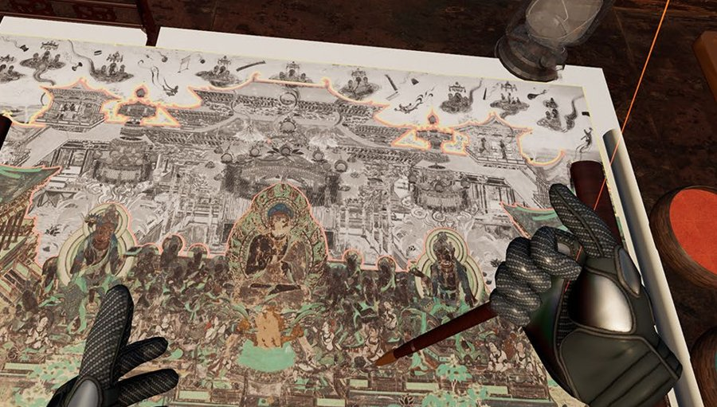
#02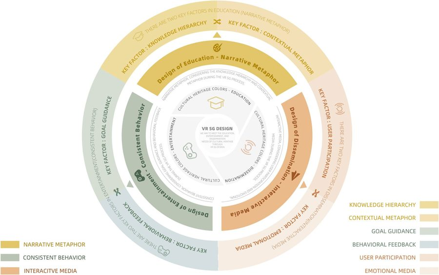
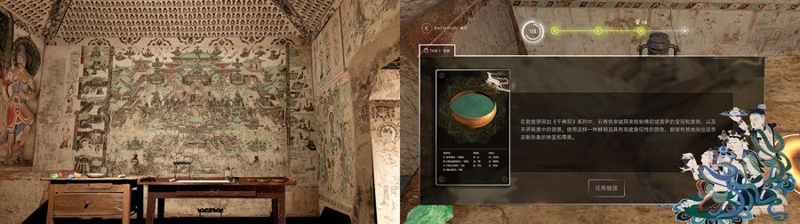
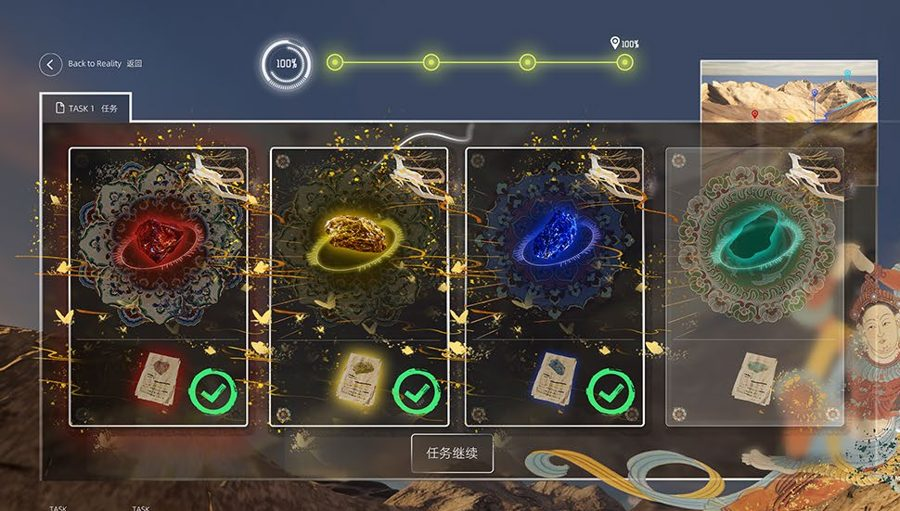
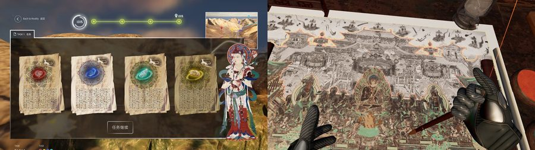
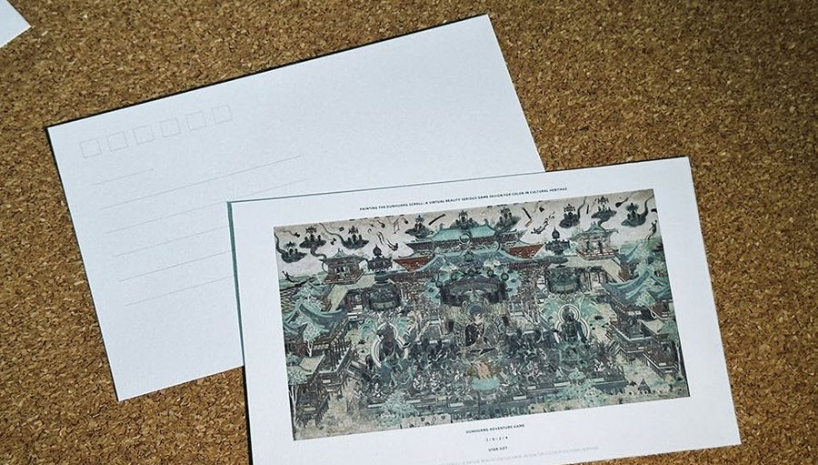
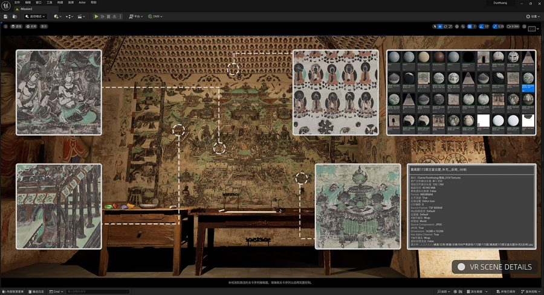
Design of a Virtual Reality Serious Game for Experiencing the Colors of Dunhuang Frescoes
Users grind mineral pigments and paint frescoes in VR. Compared with a VR exhibition, it raised engagement and willingness to explore and share.
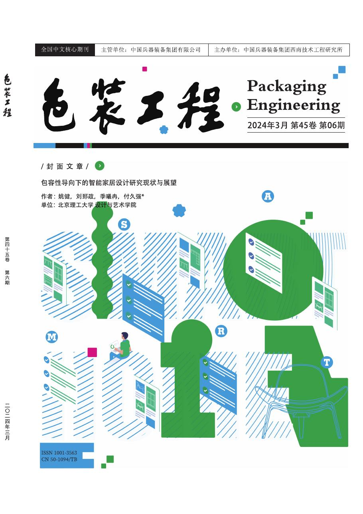
#03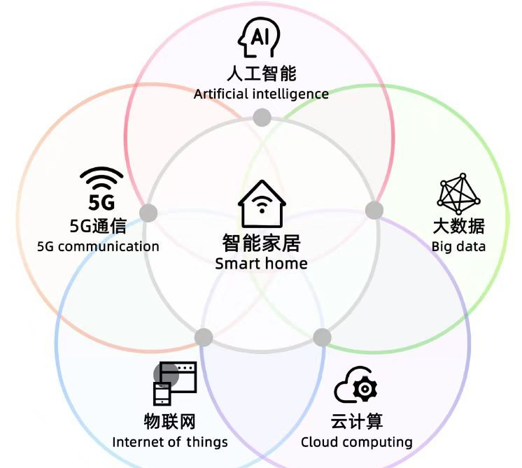
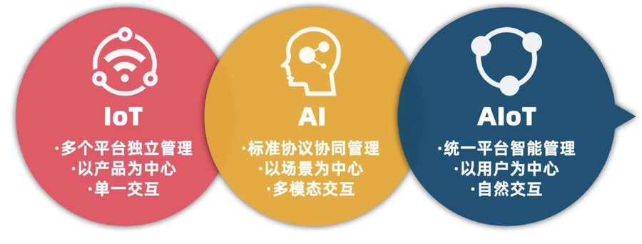
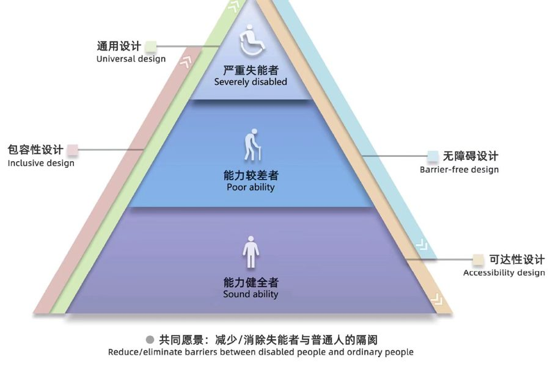
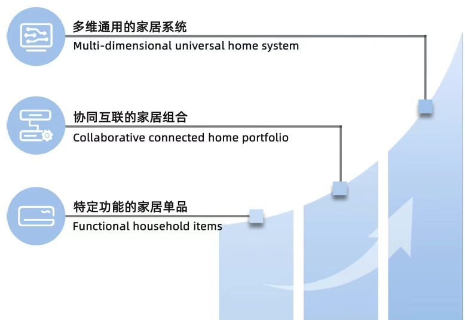
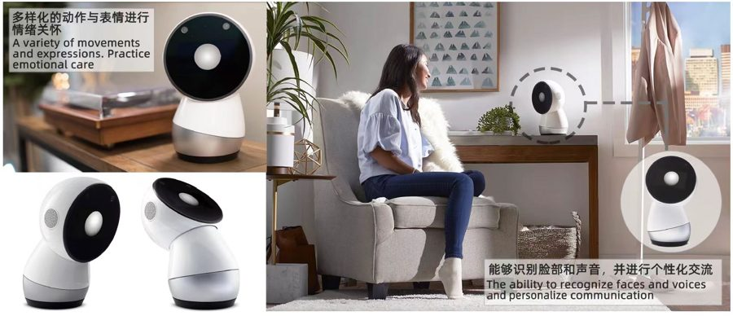
包容性导向下的智能家居设计研究现状与展望
Research Status and Prospects of Inclusive Smart Home Design
Vol. 45, No. 6, 2024
Defines four dimensions of inclusive smart-home design and maps current research hotspots and future trends.
Full List
All Publications
- 2026A&HCI · EICAS Q1 TopArchiBuilder: A virtual reality-based gamified experience design for architectural images in Dunhuang muralsLiu, Z., Ji, X., Cui, Y., Zhang, T., & Yao, J.Frontiers of Architectural Research
- 2026EIDesign of Dunhuang-themed costume art exhibition space based on user needsLiu, Z., Feng, C., Cui, Y., Wang, Y., & Yao, J.Int. Conf. on Intelligent Engineering and Next-Gen Healthcare Systems (IENHS)
- 2026EIDesign and preliminary evaluation of a virtual reality therapeutic game for children with spatial perception disordersLiu, Z., Wang, M., Yu, F., & Yao, J.Int. Conf. on Intelligent Engineering and Next-Gen Healthcare Systems (IENHS)
- 2025Int'l Conf.基于敦煌壁画建筑图像的
混合现实体验设计研究 姚健, 刘郅政敦煌藏经洞的发现与中国俗文化研究学术研讨会 - 2024SCI · A&HCICAS Q1 TopDesign of a virtual reality serious game for experiencing the colors of Dunhuang frescoesLiu, Z., Chen, D., Zhang, C., & Yao, J.Heritage Science
- 2024SCIDesign of breastfeeding chairs for maternity rooms based on Kano-AHP-QFD: User requirement-driven design approachLiu, Z., Zhang, C., Ji, X., Yi, X., & Yao, J.Heliyon
- 2024SCIImmersive experiences in museums for elderly with cognitive disorders: a user-centered design approachYi, X., Liu, Z., Li, H., & Jiang, B.Scientific Reports
- 2024北大核心封面文章包容性导向下的
智能家居设计 研究现状与展望 姚健, 刘郅政, 季曦冉, 付久强包装工程 - 2024北大核心基于用户需求驱动的
新中式座椅设计研究 刘郅政, 易欣玥, 张驰, 姚健家具与室内装饰 - 2024AMI 扩展基于KANO-AHP的
科技博物馆空间设计研究 易欣玥, 江波, 刘郅政设计 - 2024Int'l Conf.敦煌壁画中的卷草形补间铺作
形态流变与意匠辨析 姚健, 关湘粤, 刘郅政*, 许丽鹏敦煌石窟艺术国际学术研讨会 - 2023EIResearch on the current situation and trends of artificial intelligence in exhibition designYi, X., & Liu, Z.International Conference on Human-Computer Interaction (HCII)
- 2023Int'l Conf.A visual analysis of VR user experience based on bibliometricsYi, X., & Liu, Z.Human Factors in Virtual Environments and Game Design (AHFE)
- 2023北大核心基于文献计量学的
明式家具研究现状 及发展趋势分析 姚健, 刘郅政, 易欣玥, 于德华家具与室内装饰 - 2023AMI 扩展基于绿色理念的
儿童教育空间设计方法研究 易欣玥, 刘郅政, 陈钇伶, 江波艺术与设计(理论)
Funded Research
Research Projects
基于多模态复原的敦煌壁画建筑图像空间谱系与演化机制研究
BIT Graduate Research & Innovation Program, Key Project (2025YCXZ047)
敦煌壁画建筑图像艺术的谱系构建与传承路径研究
National Social Science Fund of China, Major Project · Special Program for Rare Disciplines (24VJXT010)
敦煌壁画建筑装饰艺术数字化展览
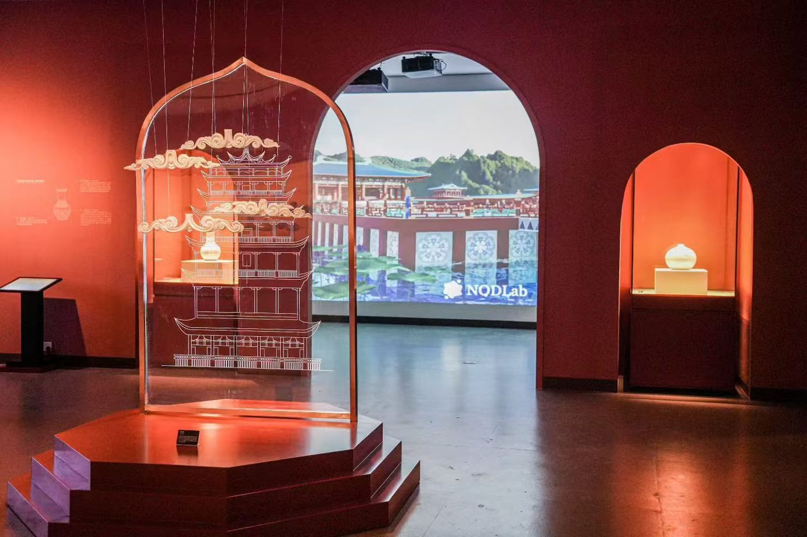
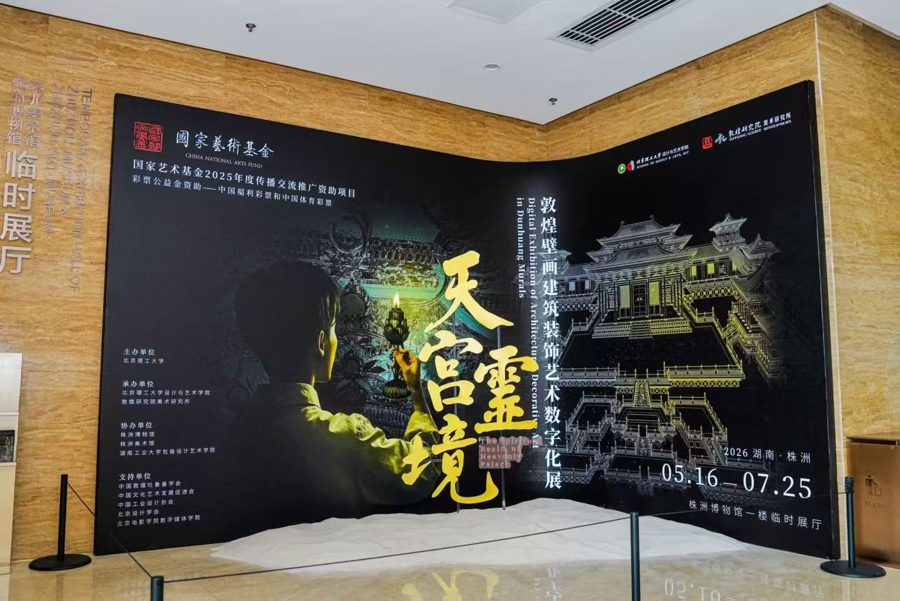
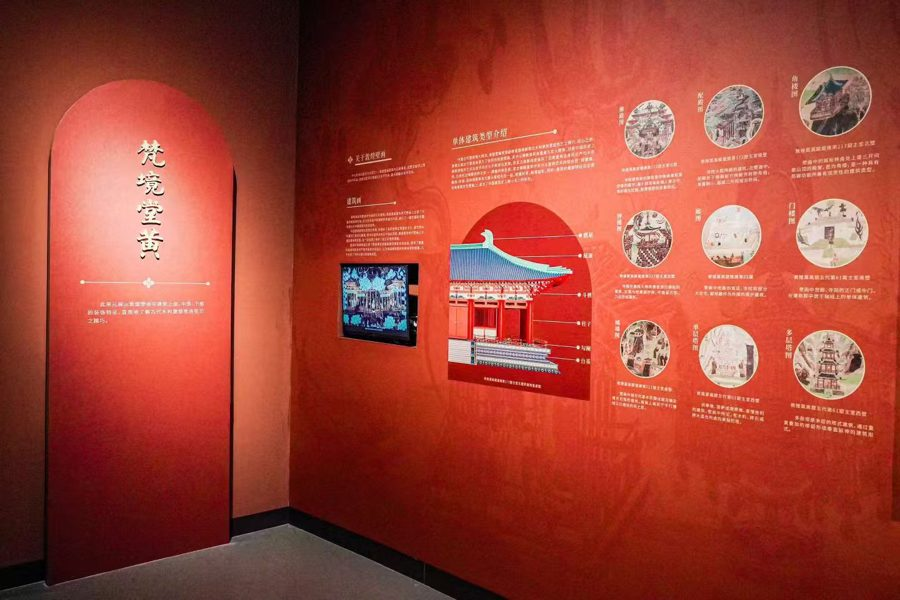
天宫灵境 · The Spiritual Realm of Heavenly Palace — touring digital exhibition, 2026
新中国家具设计中的“人民性”研究（1945–1978）
敦煌壁画建筑图像数字化传承路径研究
设计驱动创新下的山西省方山县文化软实力提升策略研究
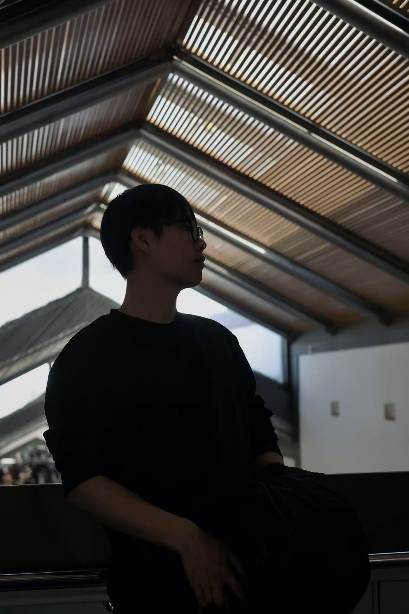
Architecture painted a thousand years ago can still be walked through.Behind the research
Curriculum Vitae
Honors & Education
Awards & Honors
- 2026State-Sponsored Graduate Study Abroad ProgramChina Scholarship Council
- 2026Recommended Individual MemberChina Industrial Design Association
- 2025National Scholarship (PhD)Beijing Institute of Technology
- 2023National Scholarship (Master's)Beijing Institute of Technology
- 2023Outstanding Student ModelBeijing Institute of Technology
Education
- 2026.09 – 2027.08Nanyang Technological UniversityJoint PhD, College of Computing and Data Science
- 2022.09 – PresentBeijing Institute of TechnologyMaster's–PhD Program (硕博连读), School of Design and Arts
- 2018.09 – 2022.07Tianjin University of TechnologyBA, School of Art